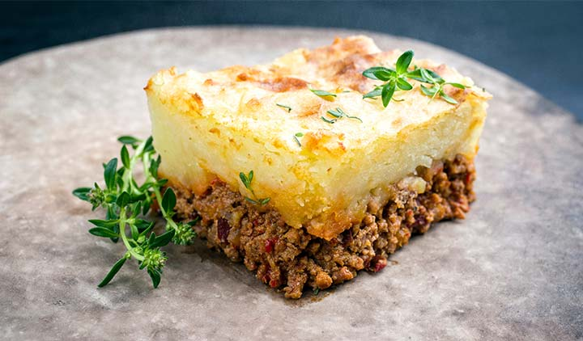

Una receta sencilla con personalidad propia para empezar el año bien alimentados. El pastel de papas, un clásico de los hogares argentinos, es popular y reconfortante.
Ver receta completa
Flan casero clásico, simple y delicioso. Mostramos paso a paso cómo prepararlo en casa.
Ver receta completa